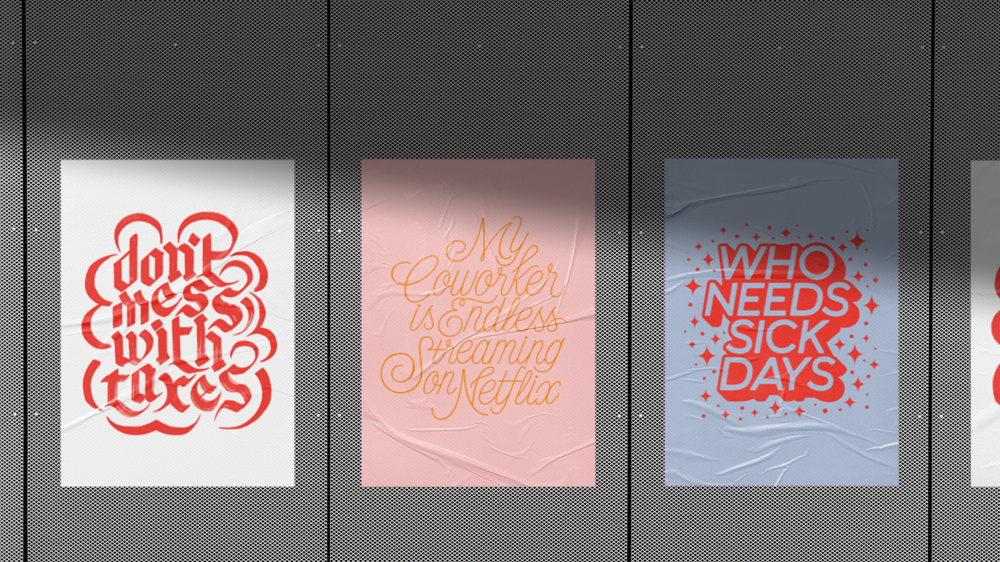
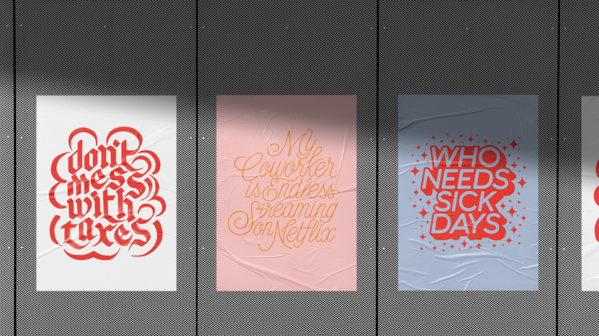

F*cking Freelancing
I created the lettering, design and branding for this project to give insight into the life of a freelancer. It has its ups and downs, so I wanted to create pieces that approached freelancing from a place of humor.
This project taught me the importance of follow-through and experimentation, in addition to improving my visual design, lettering and composition skills. I was a multi-disciplinary designer on this project, taking on the roles of
copywriter, letterer and designer.

 
